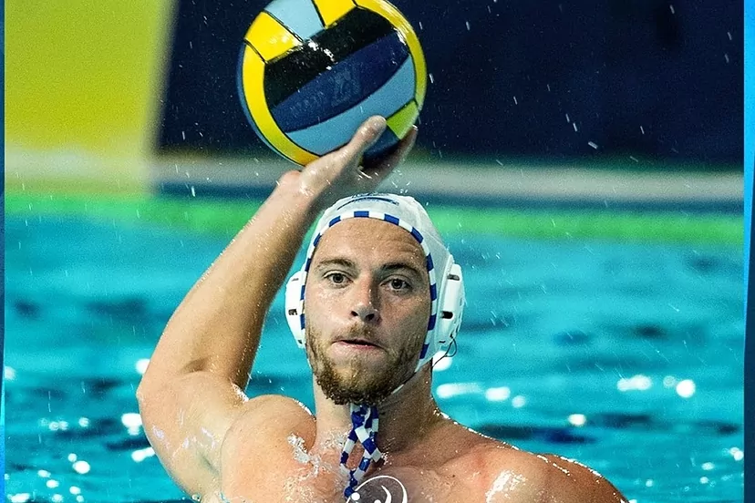

Waterpolo
El Sabadell vence en la Champions en Bucarest con Barroso como protagonista . El Astralpool CN Sabadell ha ganado a domicilio al Steaua de Bucarest (8-11), en el segundo partido de la Liga de Campeones con el madrileño Alberto Barroso, con cuatro goles como máximo anotador.